Review draft: no live contributions fetched. Real GitHub UI/sidebar is not part of this preview.
ayman@github ~ $ whoami

ayman@github ~ $ ./contributions.sh

ayman@github ~ $ ./identity-and-stats.sh
 |  |
ayman@github ~ $ ./proof-of-work.sh
Morocco2030 · PC Full Check · VioletGate · Ayman Calc
Project descriptions and verification links are included in README.md.